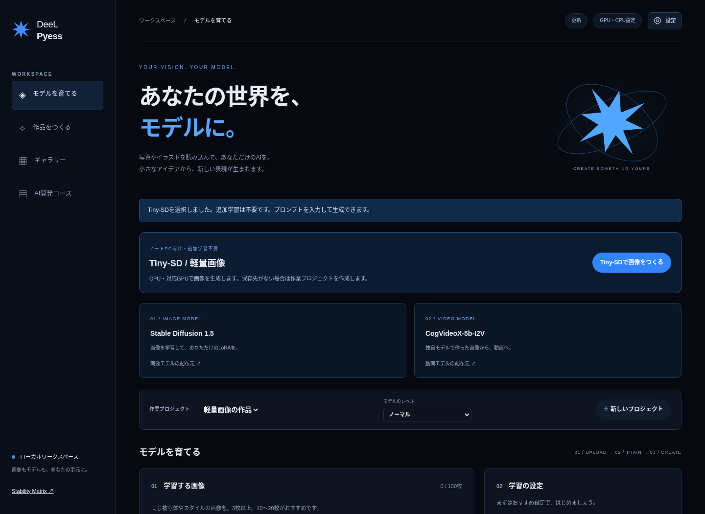
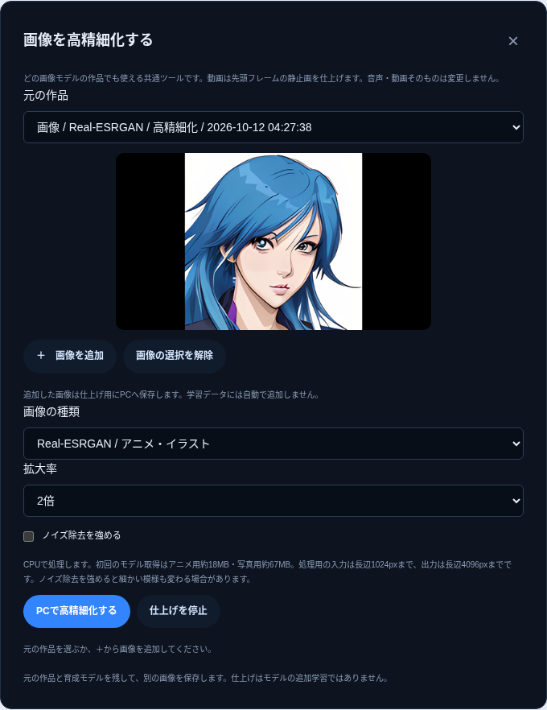
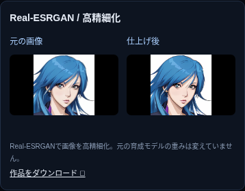
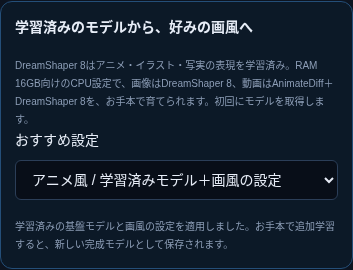
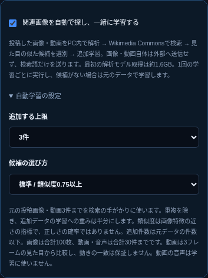
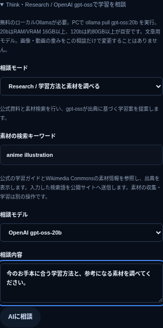
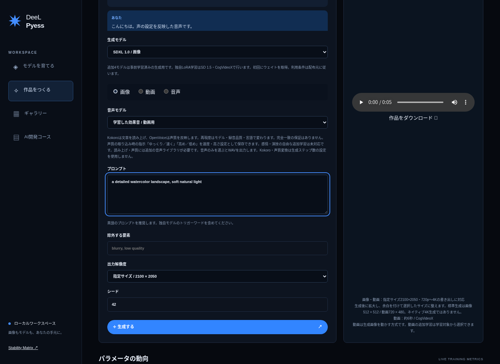
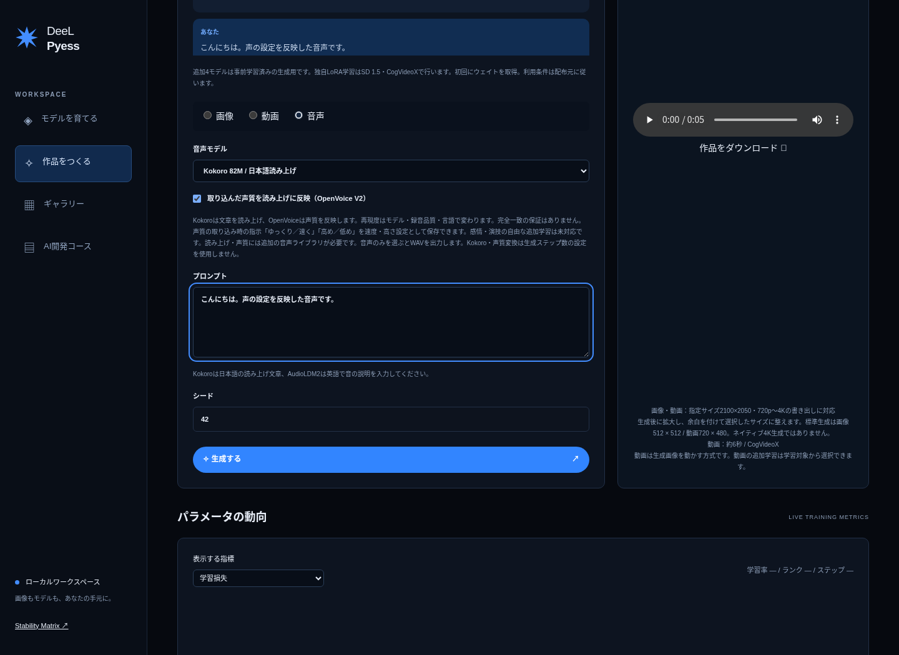
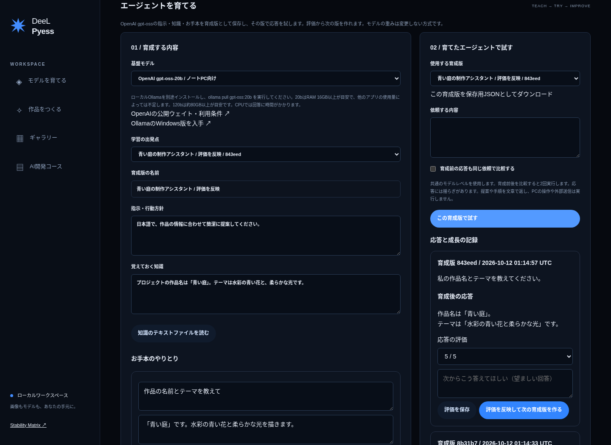
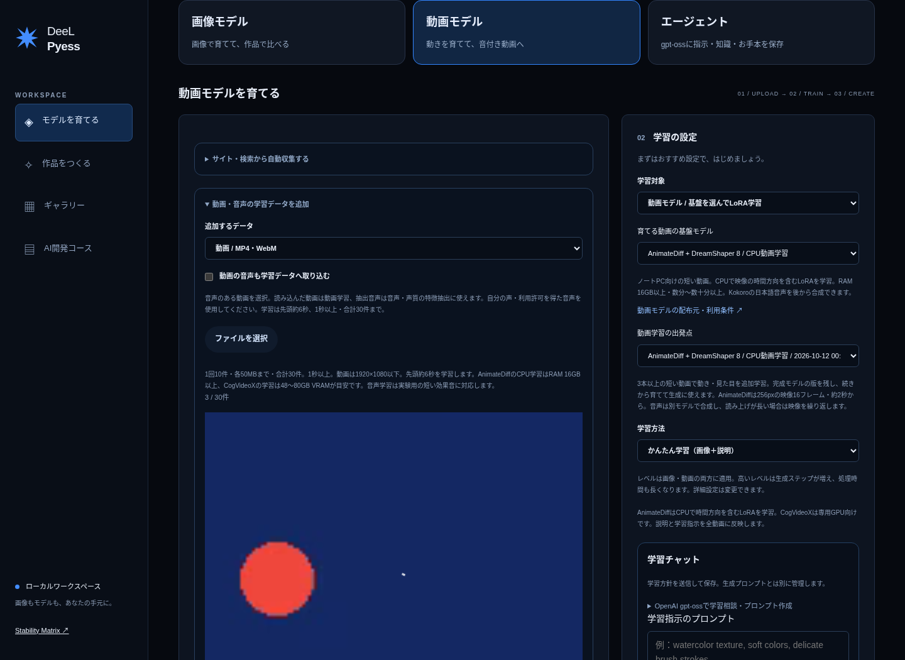

01 / IMAGE
選べる4つの画像基盤モデル
Tiny-SD・Small-SD・アニメ用DreamShaper 8はCPUでLoRAを追加学習。SD 1.5・DreamShaper 8のCUDA設定も選べます。完成した版を選んで生成し、その続きから育成できます。版ごとに保存するので、以前の学習結果も残ります。「育成前後を比べて生成」で、同じ条件の作品を並べて変化を確認できます。
独自LoRAを保存・持ち出し ↗
画像を選ぶ。学習する。作品にする。
DeeL Pyessは、独自モデルの開発と
AIをつくる技術の学びを、ひとつにします。

つくって、比べて、
仕組みまで理解する。
エクスプローラーから画像やフォルダを選び、学習用データとして取り込みます。画像の説明を編集し、グループごとに学習する内容を選べます。
共通プロンプトと除外条件は、設定画面で自由に保存・リセットできます。学習中は、損失・重み・勾配の変化を棒グラフで確認できます。
育成の出発点を選べます。画像はTiny-SD・Small-SD・SD 1.5・DreamShaper 8。アニメ・イラスト用DreamShaper 8のCPU設定を加え、4基盤・5設定から選べます。AMD・Intel搭載ノートPCでも追加学習できます。
Tiny-SD・Small-SD・アニメ用DreamShaper 8はCPUでLoRAを追加学習。SD 1.5・DreamShaper 8のCUDA設定も選べます。完成した版を選んで生成し、その続きから育成できます。版ごとに保存するので、以前の学習結果も残ります。「育成前後を比べて生成」で、同じ条件の作品を並べて変化を確認できます。
AnimateDiff + DreamShaper 8で、動画を使って見た目や動きを追加学習。完成した版から映像を生成し、Kokoroの日本語音声を合成できます。CPU・RAM 16GB以上が目安。まず256px・約2秒から始めます。長い読み上げでは映像を繰り返し、音声を最後まで収録します。専用GPU向けのCogVideoXも選べます。
Tiny-SD・Small-SDの画像LoRAとAnimateDiffの動画LoRAはCPUで学習できます。CPUの動画生成は数分〜数十分以上かかる場合があります。SD 1.5・DreamShaper 8のCUDA設定とCogVideoXにはNVIDIA CUDA GPUが必要です。DreamShaper 8のCPU設定はRAM 16GB以上が目安です。720p〜4Kへの書き出しは、生成結果を拡大し、必要に応じて余白を付けます。効果音の独自学習は短い音の実験用です。日本語の読み上げと声質の反映には、下記のKokoro・OpenVoiceを使用します。各モデルの重みは初回に取得します。
SDXL 1.0・SSD-1B・PixArt Sigmaでは画像を、LTX-Videoでは文章から動画を生成できます。この4モデルは生成専用です。独自画像LoRAの基盤は学習画面で選択し、動画LoRAはAnimateDiffとCogVideoXから選べます。利用には対応するGPUと、各モデルの利用条件への同意が必要です。
OpenAI gpt-oss-20b / 120bに、指示・知識・お手本を保存。育成版を選んで応答を試し、評価と望ましい回答から次の版を作れます。以前の版も残し、育成前の応答と比較できます。重みを変更せず、保存した内容を推論へ反映する方式です。ローカルOllamaとモデルは別途導入。20bはRAM 16GB以上、120bは約80GB以上が目安です。
AudioLDM2 Largeで効果音・環境音を生成（非商用）。Kokoroで日本語を読み上げ、OpenVoice V2で参照音声の声質を反映できます。動画や指定サイトから抽出した音声も、学習用データに取り込めます。学習チャットの「ゆっくり・高め」などの対応指示を読み上げ設定に保存できます。
声質の取り込みは特徴抽出で、モデル全体の追加学習とは異なります。再現度はモデル・録音品質・言語によって変わります。自分の声や利用許可を得た声を使い、同じ文章で試聴して違いを比較できます。音声機能は追加ライブラリのインストールが必要です。
Tiny-SD・Small-SDは、CPUで画像LoRAを追加学習できるモデルです。学習は256px・1枚ずつ行い、最初は30ステップから試せます。少ないステップは動作や傾向の確認用です。画像・説明の改善と継続学習で調整します。Tiny-SDの公開モデルからの生成では、対応するAMD・Intel GPUではDirectML、NVIDIA GPUではCUDAを利用できます。GPUの演算やメモリに問題が出た場合はCPUで再試行します。256pxで生成してから指定サイズへ拡大するため、大型モデルとは画質が異なります。
v0.1.4以降は、アプリ右上の「更新」から最新版を確認・取得できます。ファイルの検証後、確認画面からインストールを開始します。旧版から初めて更新する場合や、アンインストール済みの場合は、このサイトのセットアップEXEを実行してください。保存済みのデータは引き継ぎます。
Windows版はDeeL Pyessの専用画面で起動します。画像の投稿、学習、生成、設定、更新の確認までアプリから操作できます。追加ライブラリの導入と更新時は、アプリのセットアップ画面を表示します。
「画像モデル」「動画モデル」「エージェント」から育てる対象を選びます。画像は3枚以上、動画は3本以上を追加して、基盤モデルを選んで学習します。完成モデルの「このモデルで生成する」から試作し、「学習の出発点」にその版を選ぶと続きから育てられます。利用できるモデルはPCのメモリとGPUによって変わります。
画像・動画の生成で選択できます。
詳細設定は用途に合わせて調整できます。
まずは気軽に試作。
20 stepsもう少し丁寧に生成。
35 steps深考 — 時間をかけて生成。
50 stepsモデル別の設定でじっくり生成。
200 steps「深考」は生成ステップを増やす品質設定の名称です。言語モデルの思考機能ではなく、品質の改善を保証するものでもありません。高いレベルは処理時間が長くなります。
生成チャットの「＋」で下絵を追加。選択中の画像モデルと育成版に、参考画像とプロンプトを反映します。作品ができたら、共通の仕上げツールで高精細化できます。


画像の演算はPC内で行います。モデルの初回取得にはネット接続が必要です。高精細化はモデルの追加学習ではありません。動画は先頭フレームを静止画として仕上げます。
Thinkは今の学習状況とPCのメモリから改善案を検討。Researchは公式の学習ガイドと公開素材を調べ、出典付きで提案します。画像・動画の学習チャットから選択できます。



ローカルOllamaとgpt-ossが必要です。回答を確認し、短い学習指示に編集してから反映します。モデルの学習・生成とAI相談は、一つずつ実行します。
画像・動画は「基盤を選ぶ → データで育てる → 完成モデルで作る」。エージェントは「指示・知識・お手本を保存 → 応答を試す → 評価を反映」。PCでもスマートフォンでも、この流れで操作できます。
新しいプロジェクトを作り、エクスプローラーから画像・フォルダを選びます。指定サイトやWikimedia Commons検索での画像・動画収集も可能。グループ分けと説明を確認します。
「育てる基盤モデル」を選択します。AMD・Intel搭載PCではTiny-SDから始め、学習チャットで方針を保存します。ステップや学習率を確認して学習を開始すると、棒グラフで変化を確認できます。問題が起きた場合は「学習を停止・リセット」で再試行できます。投稿データと完成済みモデルは削除されません。
完成した学習の「このモデルで生成する」を押し、トリガーワードを含むプロンプトを入力します。生成に使う完成モデルの版も選べます。画像・動画は720p〜4K、または指定サイズ2100 × 2050で保存できます。動画には、対応する音声モデルで作った音声を追加できます。
スマートフォンは、同じWi-FiのPCに接続して操作します。現時点ではソース版の Start-Phone.bat または ./start-phone.sh で接続用URLを発行してください。演算とデータ保存はPC側で行います。Windows専用画面からのスマートフォン接続設定は準備中です。

実際にTiny-SDをCPUで育成し、育成前後を同じプロンプト・シードで生成した比較画面です。どちらも256px。学習結果を作品で確かめ、好みに合わせて育て直せます。
3件以上の参照音声 → 学習チャットの指示 → 声質の特徴抽出 → Kokoroで読み上げ → WAV試聴。モデルによって再現度が変わるため、同じ文章で比較します。

実際のCPUワーカーで日本語読み上げ・声質反映・試聴を確認した画面です。画像・動画の実モデルGPU生成品質は未検証です。
基盤を選ぶ → 指示・知識・お手本を保存 → 育成版で応答を試す → 評価を次の版へ。画像・動画と同じように、以前の版を残して育てます。

エージェントは保存した育成内容を推論に反映します。モデルの重みを変更する学習ではありません。
理論だけで終わらない、8つの実習。
データ、モデル、評価を自分の手で扱い、
最後は作品とモデルをポートフォリオに。
基盤モデル・LoRAの役割、画像収集、グルーピング、比較用データの設計。
写し学習・スタイル学習。損失、学習率、ステップ、ランクを比較する実験。
BLIPの仮ラベルを使う半教師あり学習と、ユーザー評価を使うRWR追加学習。
生成テスト、複数シードでの比較、動画制作。実験ノートとLoRAをまとめる。
動画を3本以上取り込み、基盤と学習の出発点を選択。完成版を使って短い映像を生成し、日本語の読み上げを付けられます。

この実画面の検証では、動画の時間方向と画面内容のLoRAを学習し、保存した版で720pの音声付きMP4を作成しました。標準映像は256px・約2秒で、出力時に拡大します。音声の長さに合わせて映像を繰り返し、口の動きとの同期は行いません。
「PC環境・AI機能」でCPU環境と日本語音声を導入。「動画モデル」でAnimateDiffを選び、短い動画を3本以上投稿します。まず10ステップ・ランク4で学習し、完成モデルの「このモデルで生成する」へ。映像のプロンプトとKokoroが読み上げる日本語を入力してください。音声は後から合成する方式で、口の動きとの同期は行いません。
Ollamaを導入し、gpt-oss:20bを取得。「エージェント」で名前・指示・知識・お手本を入力して育成版を保存します。「この育成版で試す」で応答を確認し、評価と望ましい回答から次の版を作ります。育成内容はJSONで保存できます。CPUでは回答に時間がかかり、16GBでも他のアプリの使用量によりメモリ不足になる場合があります。
アプリは無料。画像とモデルのデータはローカルに保存されます。
v0.1.7 Preview / WindowsセットアップEXE / Python同梱
DeeL Pyess をダウンロードWindows 10 / 11・64bit向け。現時点のEXEは未署名のため、Windowsの発行元確認が表示される場合があります。専用画面を閉じるとアプリが終了します。初回の表示エンジン・AI機能の準備にはネット接続が必要です。
リリース・チェックサムを見る ↗「PC環境・AI機能」で自動選択のセットアップを実行します。
プロジェクトを作成し、「モデルを育てる」の「育てる基盤モデル」でTiny-SDを選びます。
画像を3枚以上投稿し、説明を整えて学習します。まずは30ステップ・ランク4から。
「このモデルで生成する」から試作。続けて育てるときは「学習の出発点」に完成モデルを選びます。
| 基本環境 | Windows 10 / 11（64bit）：Python同梱 専用画面はWebView2を使用し、初回に表示エンジンを準備 Linux：Python 3.12 / 3.13 |
|---|---|
| 軽量画像生成 | Tiny-SD / 256px生成後に拡大 DirectML対応GPUまたはCPU / RAM 8GB以上目安 |
| 画像学習 | Tiny-SD：CPU / RAM 8GB以上目安 Small-SD：CPU / RAM 12GB以上目安 DreamShaper 8 アニメ・イラスト：CPU / RAM 16GB以上目安 SD 1.5・DreamShaper 8 CUDA設定：VRAM 16GB以上目安 |
| 動画学習・生成 | AnimateDiff：CPU / RAM 16GB以上目安 CogVideoX：BF16対応CUDA GPU 生成はVRAM 24GB以上推奨、学習は48〜80GB目安 |
| エージェント | Ollamaを別途導入 gpt-oss-20b：RAM 16GB以上目安 gpt-oss-120b：約80GB以上目安 |
| ストレージ | モデル用に数十GBの空き容量 |
| Stability Matrix | SD 1.5の.safetensorsを共有可能 |
メモリ消費は環境によって変わります。アプリ本体のダウンロードと、初回のモデル取得は別です。追加ライブラリ・ドライバ・モデル配布元へのアクセスが必要です。RAM 8GB未満では画像生成がメモリ不足になる場合があります。整理・コースは利用できます。全GPU・全演算の動作保証はありません。
API・画像入力・保存・境界値・実画面・学習方式・LoRA保存と再読込・MP4エンコードを確認。100件の製品試験が5回連続で全件合格しました。失敗・エラー・スキップは0件です。
ユーザー設定の共通プロンプトと除外条件は初期値が空です。設定マークから保存・リセットできます。これはモデルへ渡す生成条件の設定で、基盤モデルの学習済みの性質を消す機能ではありません。
生成画像への1〜5の評価を使う、報酬重み付き回帰（RWR）です。好みの結果を重視して既存LoRAを継続学習します。PPOやDDPOによる方策勾配法は含みません。
Stability Matrixはモデルとツールを管理するアプリです。DeeL Pyessは独立したアプリとして、Stability Matrixで管理するSD 1.5チェックポイントを読み、互換形式のLoRAを書き出します。
WindowsのEXEにはアプリ・専用画面・Pythonを同梱しています。Linux用ZIPにはソースコードと起動スクリプトが入っています。AI処理用ライブラリとモデルの重みは、セットアップ時または初回利用時に取得します。モデルごとに利用条件が異なります。